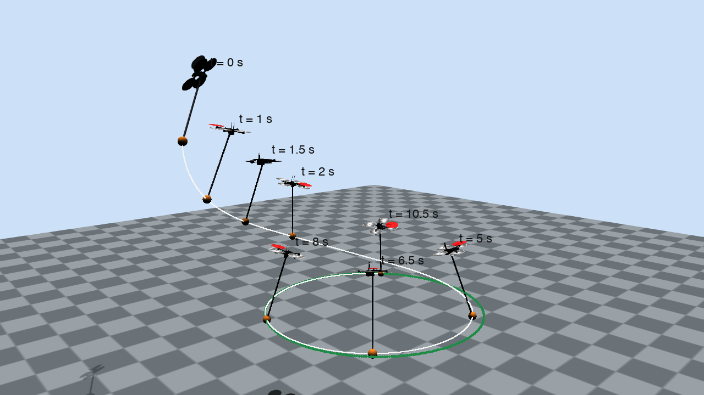
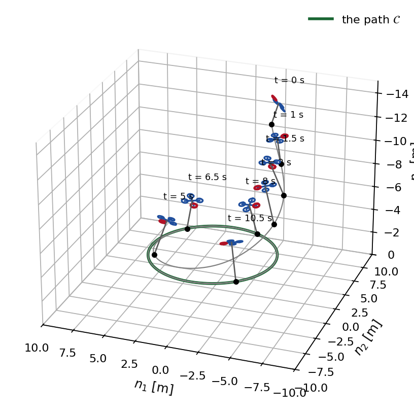
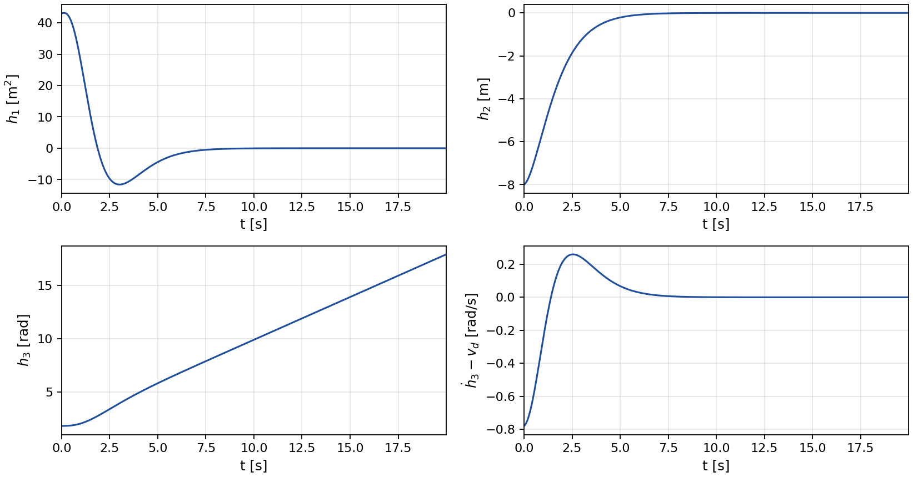
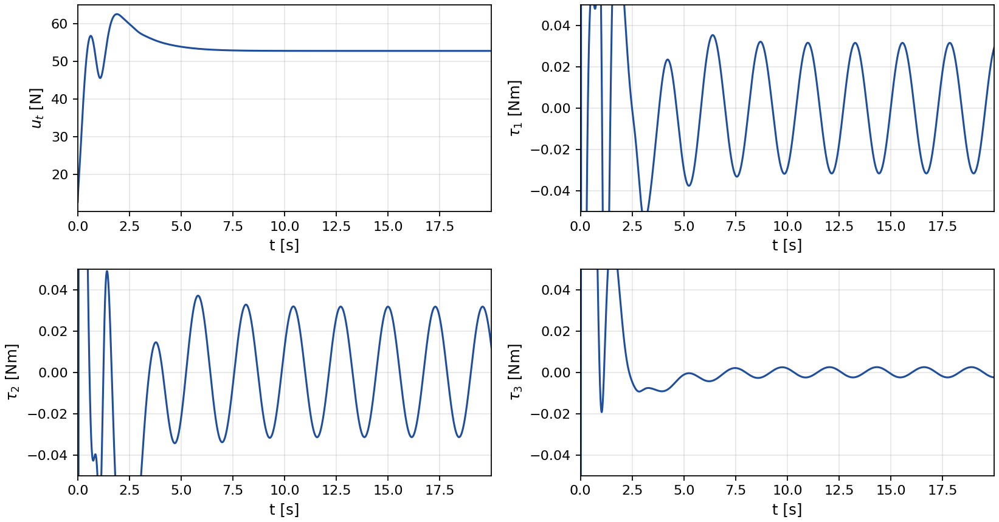
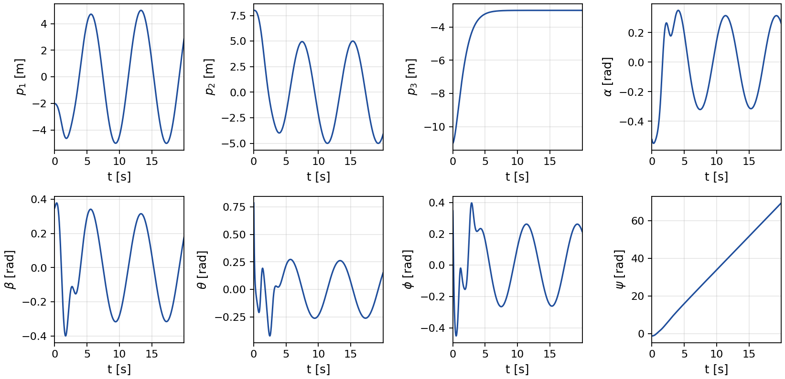
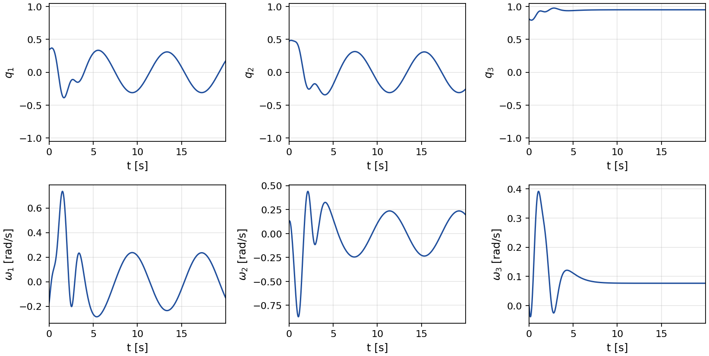
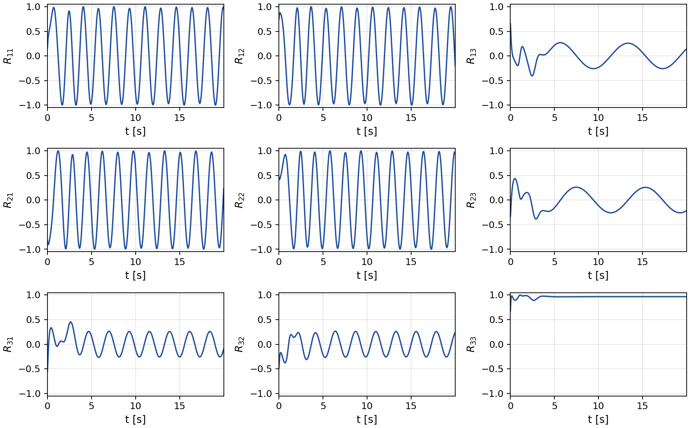
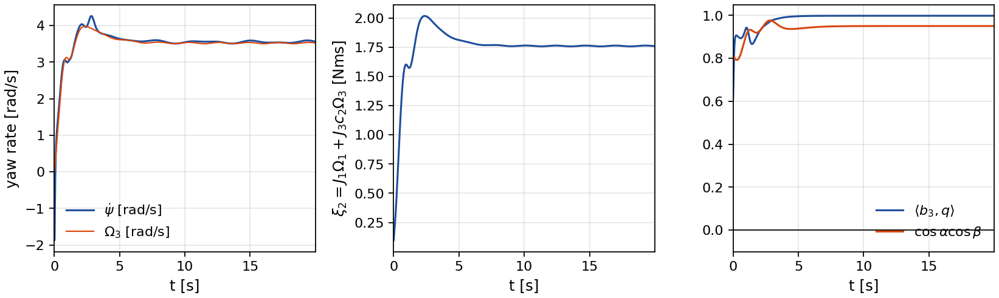
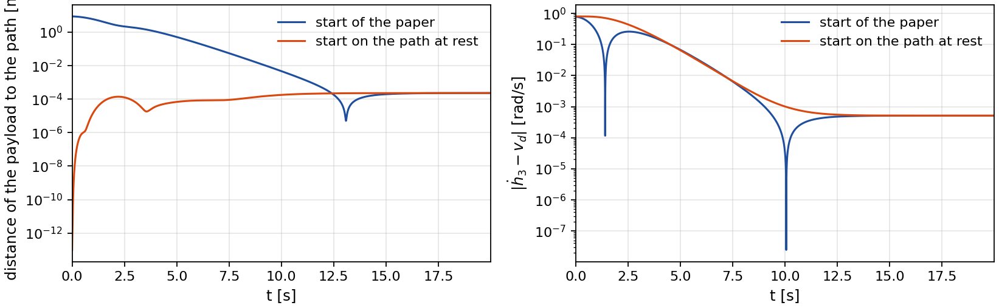
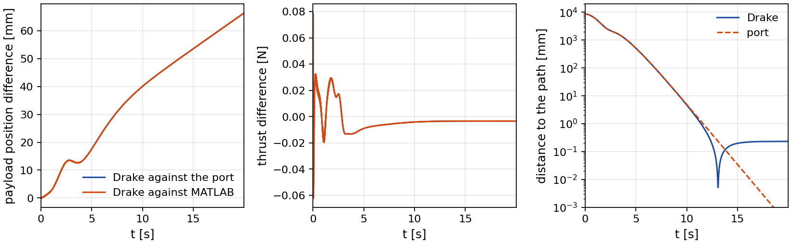

Quasi-Static Fault-Tolerant Feedback Control of a Quadrotor Carrying a Slung Payload under Rotor Failure
A quadrotor carries a payload on a massless rod pivoted at its center of mass. One rotor has failed completely, so three propellers remain and the roll torque is tied to the thrust and the yaw torque. The quasi-static feedback of the paper is designed for the faulty dynamics. It drives the payload onto a geometric path, keeps the path invariant, assigns the motion along it and keeps the yaw rate bounded. This page carries a Drake simulation of the scenario of the paper, the figures of the paper regenerated from it, a run that starts on the path, a comparison of three implementations of the closed loop, and everything needed to reproduce them.
The payload converges to the circle while the airframe spins
Rendered in Drake from the logged run. The airframe is a Skydio X2 with the mass and inertia of the paper, the rod is 3 m long and the payload is a 0.2 kg sphere. The failed rotor is marked in red. The green dots are the path, a horizontal circle of radius 5 m at 3 m above the ground, and the white line is the trace of the payload. The payload starts 8.6 m from the path with the quadrotor pitched by 45 degrees and rolled by 20 degrees. The failure ties the roll torque to the thrust and the yaw torque. With the roll torque near zero the yaw torque equals \(c_d u_t\), and the damping of the paper balances it at \(\Omega_3 = c_d u_t / (k_\Omega J_3)\), which is 3.52 rad/s for the thrust of this run. So the airframe spins up within 1.0 s and turns about its vertical axis at about 3.6 rad/s from then on, while the payload converges to the circle and settles at the commanded angular speed of 0.8 rad/s, which is 4 m/s along the circle.
Orbiting camera
The same run seen from a camera that circles the path once over the 20 s of the run.
The hover start on the path. The payload accelerates to the commanded speed without leaving the circle. Details below.
The scenario of the paper
The path is the circle \(h_1 = p_1^2 + p_2^2 - d^{*2} = 0\), \(h_2 = p_3 - r^* = 0\) with \(d^* = 5\) m and \(r^* = -3\) m in the north-east-down frame. The path coordinate is the polar angle \(h_3 = \mathrm{atan2}(p_2, p_1)\) and its rate is driven to \(v_d = 0.8\) rad/s, so the payload moves at 4 m/s along the circle. The payload starts at \(p(0) = (-2, 8, -11)\) m with the pendulum at \(\alpha = -30^\circ\), \(\beta = 20^\circ\) and the quadrotor at \(\theta = 45^\circ\), \(\phi = 20^\circ\), \(\psi = -60^\circ\), with the velocities of Section VI. The controller is the quasi-static feedback (17), (26) of the paper with the damping (2), and the gains place the poles of the three chains at the values of the paper.


Outputs and inputs
The two transverse outputs decay to zero and the speed error vanishes, as the transverse dynamics (31) of the paper require. The thrust settles at 52.8 N, a little above the weight because the pendulum leans inward on the circle. After the transient the torques stay small. The roll torque \(\tau_1 = c_1 u_t - c_2\tau_3\) is not free: it is set by the thrust and the yaw torque through the failure.


Configuration, pendulum and attitude
The payload position, the pendulum angles and the Euler angles of the quadrotor, then the pendulum direction with its angular velocity and the nine entries of the rotation matrix. The yaw angle grows without bound, by 70 rad over the run, while its rate stays bounded. This is the internal dynamics of Theorem 1: the yaw rate and the state \(\xi_2 = J_1\Omega_1 + J_3 c_2\Omega_3\) are bounded along the solution.




Starting on the path
At hover with the payload on the path, the pendulum vertical and the quadrotor level, every transverse coordinate is zero, so the state lies on the path-following manifold whatever the heading. The paper states that from such a start the transient keeps the payload on the path. In this run the payload starts at rest on the circle and the tangential input accelerates it to \(v_d\). The transverse coordinates stay at zero in continuous time, and in the sampled Drake run the payload never leaves the circle by more than 0.23 mm.

Three implementations of the closed loop
The MATLAB code of the paper integrates the coordinate-free model (1) with ode45 and evaluates the controller from expressions generated by Maple. The Python port evaluates the same expressions, translated line by line, on the same model. At the initial condition and at 59 random states its thrust, torques, output chains and vector field agree with MATLAB to a relative 7.8×10-12, and the two closed-loop runs with tight tolerances agree to 4.8×10-10 m in the payload position. A verification gate checks the expressions against the closed loop itself: the time derivative of every term of the two sixth-order chains equals the next term, and at the top of each chain it equals the commanded \(\nu_1\) or \(\nu_3\), which tests the drift terms and the matrix \(\tilde A\) together. The Drake run replaces the model by a multibody plant: a free rigid body for the quadrotor and one rigid body for the pendulum, joined by a universal joint at the center of mass of the quadrotor, with the controller sampled at 1000 Hz. A second gate checks that the accelerations of this plant equal those of the model (1) at random states and inputs to 2.6×10-14 relative, with a point-mass payload.

| Port, point mass | Drake, 1 kHz | Drake, point mass | Drake, 400 Hz | |
|---|---|---|---|---|
| Payload within 1 cm of the path after [s] | 9.28 | 9.25 | 9.28 | 9.26 |
| Distance to the path after 10 s [mm] | < 4.9 | < 4.7 | < 5.0 | < 4.8 |
| Distance to the path at 20 s [mm] | 2.3×10-4 | 0.23 | 8.3×10-4 | 0.23 |
| Speed error after 10 s [rad/s] | < 6.4×10-4 | < 5.1×10-4 | < 4.7×10-4 | < 0.0012 |
| Yaw rate after 10 s [rad/s] | 3.55 | 3.55 | 3.55 | 3.55 |
| Thrust after 5 s [N] | [52.81, 53.92] | [52.81, 53.91] | [52.81, 53.91] | [52.80, 53.89] |
| Against the port | ||||
| Transverse difference after 10 s [mm] | 0.27 | 0.05 | 0.25 | |
| Offset along the circle at 20 s [mm] | 66 | 62 | 159 | |
| Thrust difference after 5 s [N] | 0.009 | 0.009 | 0.022 | |
| Torque difference after 5 s [Nm] | 2.1×10-4 | 2.1×10-4 | 5.4×10-4 | |
| Mean speed difference after 10 s [rad/s] | -5.3×10-4 | -4.8×10-4 | -0.0012 | |
The port integrates the coordinate-free model with a tolerance of 10-9. The Drake plant is integrated with a third-order Runge-Kutta scheme at 4 kHz. The spherical payload adds a rotational inertia of 2.9×10-4 kg m2 to the 1.8 kg m2 of the point mass about the pivot, and the universal joint lets it swing but not spin about the rod.
| Verification gates | Value |
|---|---|
| Port against MATLAB, both with the default tolerances of ode45: largest payload position difference | 26 mm |
| Port against MATLAB, both with tight tolerances: largest payload position difference | 0.000 mm |
| Port against MATLAB, tight tolerances: largest thrust difference | 1.3×10-8 N |
| Controller, torques and vector field at 60 states against MATLAB | relative difference 7.8×10-12 |
| Chain gate, largest relative mismatch of a derivative along the closed loop | 6.9×10-10 |
| Plant gate, accelerations of the Drake plant against the model (1) | relative difference 2.6×10-14 |
Every parameter
These are the complete settings behind every figure on this page. They are those of Section VI of the paper.
Slung payload system
| Parameter | Value |
|---|---|
| Quadrotor mass and inertia | mq = 5 kg, J = diag(0.03, 0.03, 0.05) kg m2 |
| Payload and rod | mp = 0.2 kg at L = 3 m from the pivot on a massless rod. In Drake the payload is a sphere of radius 0.06 m |
| Rotor distance and drag ratio | ℓ = 0.2 m, cd = 0.01, so c1 = 0.1 m and c2 = 10 |
| Failure | the rotor on the +b2 arm is lost, τ1 = c1 ut − c2 τ3 |
| Damping | kΩ = 3 s-1 on every axis, applied torque τa = τ − kΩ J Ω |
| Gravity | 9.81 m/s2, north-east-down frame |
Path and controller
| Parameter | Value |
|---|---|
| Path | x2 + y2 = 52, z = -3 m, path coordinate h3 = atan2(p2, p1) |
| Speed reference | vd = 0.8 rad/s (4 m/s along the circle) |
| Poles of the h1 chain (order 6) | {-1.0, -1.5, -2.0, -2.5, -3.0, -3.5}, K1 = (78.75, 250.875, 319, 208.125, 73.75, 13.5) |
| Poles of the h2 chain (order 2) | {-1.0, -1.2}, K2 = (1.2, 2.2) |
| Poles of the speed chain of h3 (order 5) | {-1.0, -1.5, -2.0, -2.5, -3.0}, K3 = (22.5, 65.25, 72.5, 38.75, 10) |
| Feedback | thrust from (17), torques τ2, τ3 from (26), τ1 from the failure, then the damping |
Start of the paper
| Parameter | Value |
|---|---|
| Payload | p(0) = (-2, 8, -11) m, v(0) = (-0.2, 0.1, 0.5) m/s |
| Pendulum | α = -30°, β = 20°, rates (-0.2, 0.1) rad/s |
| Quadrotor | θ = 45°, φ = 20°, ψ = -60°, Ω(0) = (-0.1, 0.3, 0.2) rad/s |
| Horizon | 20 s |
Hover start on the path
| Parameter | Value |
|---|---|
| State | payload at rest on the circle, pendulum vertical, quadrotor level with zero rates. Every transverse coordinate is zero |
Simulation
| Parameter | Value |
|---|---|
| MATLAB | coordinate-free model (1), ode45 with its default tolerances, as in the paper |
| Python port | the same model and expressions, Dormand-Prince 8(5,3) with relative tolerance 10-9 |
| Drake | MultibodyPlant, continuous, third-order Runge-Kutta at 4 kHz, controller at 1000 Hz with a zero-order hold on the body-frame thrust and torque |
| Rendering | VTK render engine of Drake. The airframe is the Skydio X2 mesh of the MuJoCo Menagerie (Apache-2.0), scaled so that the rotor hubs sit at ℓ, and the airframe, rod and payload are drawn at three times their size |
Reproducing this
The simulation code is in the repository under sim/ and the MATLAB code of the paper under
matlab/. The verification gates run first.
# set up and verify
git clone https://github.com/gradslab/qs-sl.git
cd qs-sl/sim
pip install -r requirements.txt
python3 model/test_chains.py
python3 model/compare_matlab.py
python3 drake/verify_plant.py
# the runs behind every number and figure
python3 model/simulate_port.py --tight
python3 drake/sim_drake.py
python3 drake/sim_drake.py --start on-path --tag _onpath
python3 drake/sim_drake.py --point-mass --tag _pointmass
python3 drake/sim_drake.py --hz 400 --tag _400hz
# the numbers and the figures
python3 metrics.py
python3 paper_figures.py
python3 paper_figures.py --web
# animations (Drake VTK renderer and ffmpeg), then the page
python3 drake/render_drake.py drake_run --snapshots 0,1,1.5,2,5,6.5,8,10.5 --cam wide
for c in follow side orbit; do python3 drake/render_drake.py drake_run --cam $c; done
python3 drake/render_drake.py drake_run_onpath --cam follow
python3 web/anim_web.py
python3 web/page_numbers.py
python3 web/build_page.pyCitation
@unpublished{allawati2026quasistatic,
author = {Mohamed Al Lawati and Adeel Akhtar},
title = {Quasi-Static Fault-Tolerant Feedback Control of a Quadrotor
Carrying a Slung Payload under Rotor Failure},
note = {Under review},
year = {2026}
}